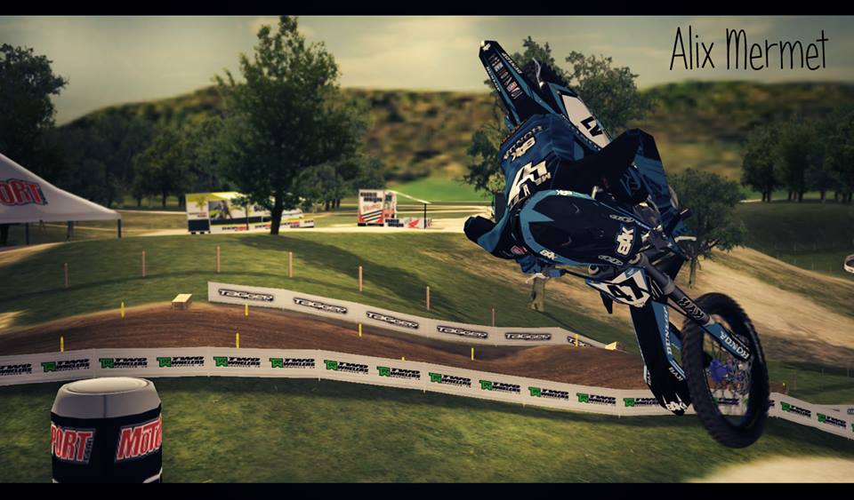

Partie perso:Alix
Partie perso:Alix
Mon profil
Nom: MERMET-BURNET
Prenom: Alix
Date de naissance: 04/03/1996 (19 ans)
Lieu de Naissance: Viriat (01)
Signe astrologique: Poisson
Centres d'intêret: Motocross, Ski alpin, Informatique, Jeux-vidéo, Foot, e-sport
Mon ressenti sur le S1 : J'avais hâte de commencer cette fomation en IUT Informatique. La grande majorité des cours se passe bien et sont très intéréssants. Néanmoins la difficukté étant en constante augmentation, il faut continuer à travailler dur pour obtenir mon premier semestre. Celui-ci devrait bien se terminer, normalement. Rendez-vous au S2 pour la suite de mes aventures.